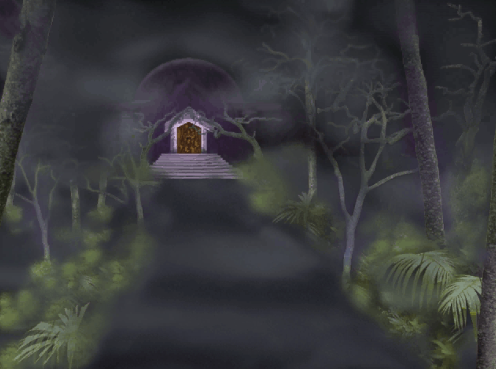
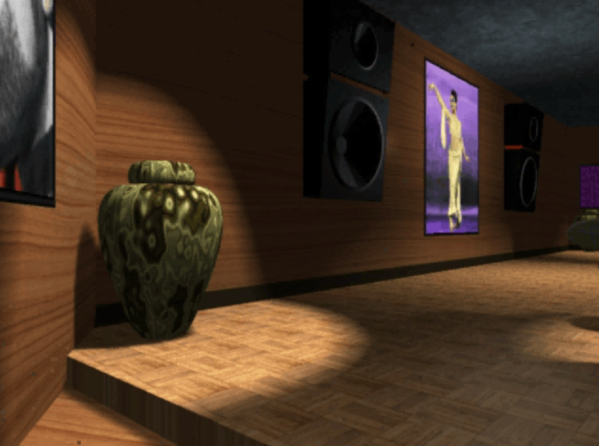

Back in 1994, Prince made a CD-ROM that boasted 500 different interactions and experiences, all housed in a bizarre Myst-like 3D rendered mausoleum in the middle of a dark forest:

Of course, today it’s hard to look at this without thinking of the creepy posthumous tours they’ve been giving out at Paisley Park since his death, but the weirdness continues. The whole game is basically a digital monument to Prince’s accomplishments, from the late 70s to the early 90s. But then there are also just bizarre moments, like the videos cut together above, that emerge from these vases that flank either side of the 3D recording studio:

When clicked, Prince’s face balloons out of the top and morphs through many of his different looks up to that point in his career. The latex stretching SFX don’t do it any favors either.
BUT REMEMBER: these are just 2 experiences. I have 498 left 2 recount 4 U…
OH I almost forgot. You need to walkthrough an intergalactic stairwell to even get to Prince’s studio: